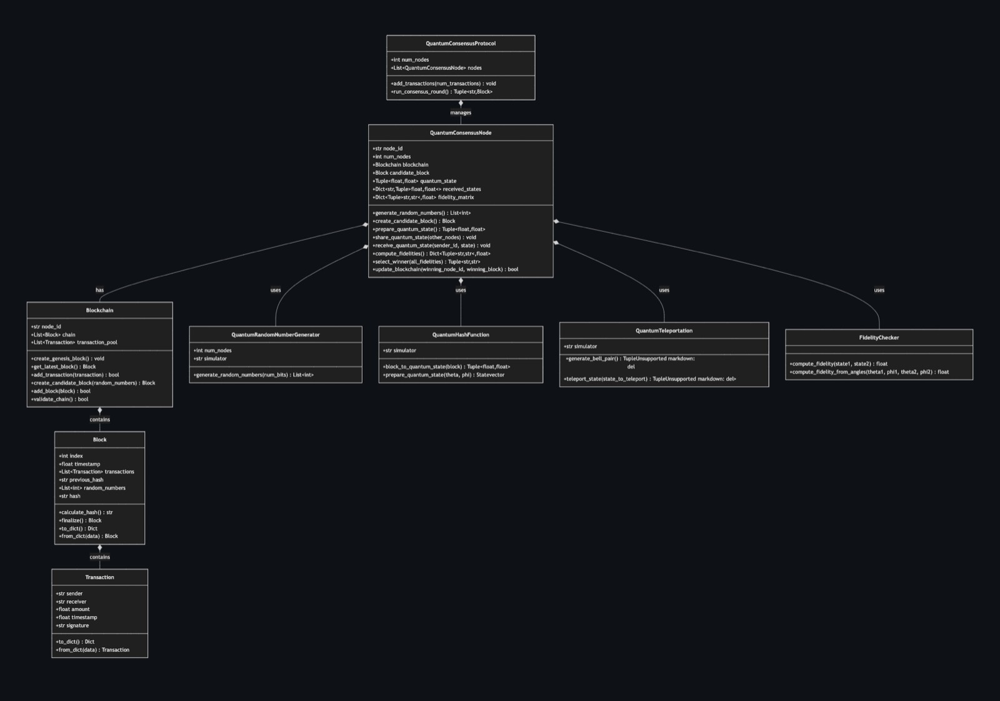
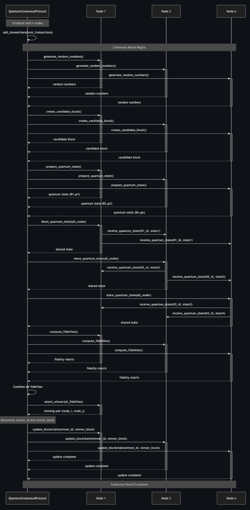

Quantum-Assisted Consensus Protocol
A blockchain consensus protocol that replaces proof-of-work with quantum state fidelity checks, simulated with Qiskit. Capstone research at Carleton University, supervised by Dr. Michel Barbeau.

Overview
This project simulates a quantum-assisted blockchain consensus protocol using Qiskit. It explores the potential of quantum fidelity checks and entanglement-based randomness to enhance security and efficiency over classical Proof-of-Work mechanisms.
Key Features
- Quantum Fidelity Validation: Uses state vector fidelity to verify block integrity and consensus.
- Entanglement-Based Randomness: Generates nonces using GHZ states for true randomness.
- Fault Tolerance: Consensus mechanism resilient to minority node failure through fidelity thresholding.
Background & Quantum Principles
The simulation replaces classical proof-of-work with a mechanism where nodes propose blocks encoded as unique quantum states. Verification relies on measuring the similarity between these states.
Quantum State Fidelity
We quantify the similarity between block states \(\rho\) and \(\sigma\) using fidelity:
\[ F(\rho, \sigma) = \left( \text{Tr} \sqrt{\sqrt{\rho} \sigma \sqrt{\rho}} \right)^2 \]
For pure states \( \lvert\psi_i\rangle \) and \( \lvert\psi_j\rangle \), this simplifies to \( F(\lvert\psi_i\rangle, \lvert\psi_j\rangle) = \bigl|\langle\psi_i|\psi_j\rangle\bigr|^2 \).
Entanglement (GHZ State)
The Quantum Random Number Generator (QRNG) leverages GHZ states to produce correlated random bits:
\[ \lvert GHZ_N \rangle = \frac{1}{\sqrt{2}} (\lvert 0 \rangle^{\otimes N} + \lvert 1 \rangle^{\otimes N}) \]
Unitary Transformations
Complex quantum circuits act as unitary operators \( U_{\text{block}} \) to map classical block data to a unique quantum state:
\[ \lvert\psi_{\text{block}}\rangle = U_{\text{block}} \lvert 0 \rangle^{\otimes n} \]
Implementation Details
The system is a hybrid implementation combining a classical Python blockchain with quantum components simulated via Qiskit.
System Architecture
- Classical Layer: Manages the blockchain ledger, transaction pool, and basic validation logic using standard cryptographic hashes (SHA-256).
- Quantum Layer: Handles nonce generation, state preparation, and fidelity-based consensus using Qiskit's statevector simulator.
Consensus Logic
The protocol follows a multi-step process:
- Proposal: Nodes generate a candidate block and map it to a quantum statevector using a custom Quantum Hash Function.
- Verification: Nodes exchange statevectors and compute pairwise fidelity.
- Agreement: Consensus is reached when a majority of nodes agree on state fidelity (>0.9), with a deterministic tie-breaker selecting the winning block.
Performance Observations
The simulation utilizes Qiskit Aer's statevector_simulator for ideal execution.
Simulation Metrics
- Scalability: Execution time scales with network size (\(O(N^2)\) for pairwise checks) and qubit count.
- Throughput: Preliminary tests indicate consensus rounds complete in seconds for small networks (3-5 nodes, 6-10 qubits).
- Bottlenecks: Statevector simulation is the primary computational cost, while fidelity calculations are relatively lightweight.
Technology Stack
- Language: Python (3.x)
- Quantum Framework: Qiskit (~0.4x)
- Quantum Simulation: Qiskit Aer (`AerSimulator` with `method='statevector'`)
- Libraries: NumPy, hashlib, json, dataclasses
Gallery
